library(tidyverse)
library(ggplot2)
library(dplyr)
library(readr)
library(readxl)
library(devtools)
library(statR)
library(knitr)Abschlussprojekt

Einleitung
In diesem R-Projekt versuche ich unseren Bibliotheks-Bestand nach dem Jahr der Veröffentlichung der einzelnen Medien aufzustellen. Konkret also lautet die Frage: “Wie viele Exemplare haben wir, welche z.Bsp. 1950 publiziert wurden im Bestand xy stehen?”
Daten
Bei den verwendeten Daten handelt es sich um eine Bestandesliste aller Exemplare in der Bibliothek des Staatsarchiv ZH. Diese wurde von SLSP (Swiss Librarian Service Platform) produziert und zur Verfügung gestellt. Mit ALMA, dem von uns verwendeten Bibliotheksprogramm, sind die Datensätze auf 100’000 Zeilen limitiert, daher war es einfacher, direkt beim Anbieter anzufragen, anstatt selbst etwas zu basteln.
bib_bestand <- read_excel(here::here("daten/raw/R_Projekt.xlsx")) |>
janitor::clean_names()
invisible(capture.output(glimpse(bib_bestand)))Analyseziele
Ich möchte jeden der fünf Bestände in jeweils 6 Zeitstrahlen unterteilen und dies dann auch graphisch darstellen (30 Graphiken). Dazu kommen ein paar Steudiagrammen, welche die Verteilung der einzelnen Bestände über die Jahre untereinander vergleichen.
Daten Aufbereitung
#Testbereich, keine endgültige Aufbearbeitung
invisible(capture.output(glimpse(bib_bestand)))
#Die Funktion gibt die Anzahl der Einträge in Publication Date zurück, bei denen ein Wert vorhanden ist: 8462
bib_gefiltert<-bib_bestand$publication_date
sum(!is.na(bib_bestand$publication_date))[1] 8462#2 Aus der Spalte "Publication Date" das Minuszeichen entfernen, da sonst eine Sortierung nach Jahreszahlen (auch filter) nicht möglich ist.
bib_bestand_besenrein <- bib_bestand
bib_bestand_besenrein$publication_date <- gsub("-", "", bib_bestand_besenrein$publication_date)
invisible(capture.output(glimpse(bib_bestand_besenrein)))
#3 Einzig die Spalte publication_date aus dem Datensatz extrahiert.
bib_nur_publikation <- subset(bib_bestand_besenrein, select = publication_date)
#4 In nummerischen Vektor umgewandelt für den Filter nach Jahreszahlen
bib_bestand_besenrein$publication_date <- as.numeric(bib_bestand_besenrein$publication_date)bib_gefiltert_vor_1800 <- filter(bib_bestand_besenrein,(publication_date <=1800))
bib_gefiltert_1800_1850 <- filter(bib_bestand, between(publication_date, 1800, 1850))
bib_gefiltert_1851_1899 <- filter(bib_bestand_besenrein, between(publication_date, 1850, 1900))
bib_gefiltert_1900_1950 <- filter(bib_bestand_besenrein, between(publication_date, 1900, 1950))
bib_gefiltert_1951_1999 <- filter(bib_bestand_besenrein, between(publication_date, 1951, 1999))
bib_gefiltert_2000_2050 <- filter(bib_bestand_besenrein, between(publication_date, 2000, 2050)) Fragen an den Datensatz
Welcher Bestand enthält durchschnittlich die ältesten (100+ Jahre) Publikationen?
Der Bestand mit den meisten Publikationen, welche vor 1925 veröffentlicht wurden, ist Bestand D, Zürcher Geschichte. Gefolgt wird er von den Beständen B, Schweizer Geschichte und C, Geschichte der Kantone.
Welcher Bestand ist am stärksten gewachsen (und über welchen Zeitraum)?
Wenn man jeweils schaut, welcher Bestand am Anfang am kleinsten war und über die Jahre den verhältnismässig grössten Zuwachs erhalten hat, dann ist es Bestand B, Schweizer Geschichte.
Aus welchem Jahr ist das älteste Medium in unserem Bestand?
Das älteste Medium aus unserem Bestand wurde im Jahr 1645 veröffentlicht. Es befindet sich im Bestand D (Zürcher Geschichte).
Wie viele Publikationen haben wir von Bestand X aus dem Jahr X?
In diese Funktion lässt sich jeweils der Bestand als auch das Datum eintragen und nach dem Ausführen des Code-Blocks erhält man eine dementsprechende function df. Deren Ergebnis muss man dann noch in einem “result” speichern.
filter_bib_bestand <- function(df) {df_filtered <- subset(df, publication_date == 1967 & grepl("^D", permanent_call_number))
return(df_filtered)
}
result <- filter_bib_bestand(bib_bestand_besenrein)Daten Visualisierung
Teil 1 Streudiagramme
Dieser Abschnitt soll mithilfe von Streudiagrammen aufzeigen, wie sich die einzelnen Bestände über die Jahre verändert beziehungsweise erweitert haben. Einen Gesamtüberblick bietet hierbei Figure 2.
Bestand A-E nach Erscheinungsdatum (1600-2025)
Der Code nimmt eine Tabelle namens bib_bestand_besenrein und filtert daraus nur die Einträge, deren Signatur mit einem Buchstaben von A bis E beginnt.
Danach wird eine neue Spalte namens signatur_gruppe angelegt. In dieser steht einfach der erste Buchstabe der Signatur.
Im nächsten Schritt wird noch genauer gefiltert: Es werden nur noch Bücher berücksichtigt, die zwischen 1600 und 2025 erschienen sind.
Erstellung Streudiagramm:
x-Achse: Erscheinungsjahr des Buchs (zwischen 1600 und 2025)
y-Achse: Die Signatur-Gruppe (A, B, C, D, E)
Farbe: Jede Gruppe (A-E) bekommt eine eigene Farbe.
geom_jitter: Die Punkte werden leicht „verstreut“, damit man sie besser sieht.
Weitere Einstellungen: Achsenbeschriftung, Titel, Farben, Aussehen usw.
bib_A_bis_E <- bib_bestand_besenrein %>%
filter(grepl("^[A-E]", permanent_call_number))
bib_A_bis_E <- bib_A_bis_E %>%
mutate(signatur_gruppe = substr(permanent_call_number, 1, 1))
# Daten filtern und gruppieren
bib_A_bis_E <- bib_bestand_besenrein %>%
filter(
grepl("^[A-E]", permanent_call_number), # Nur A–E
publication_date >= 1600, publication_date <= 2025 # Zeitraum 1600–2025
) %>%
mutate(signatur_gruppe = substr(permanent_call_number, 1, 1))
# Plot Bestand A–E nach Erscheinungsdatum (1600–2025)
ggplot(bib_A_bis_E, aes(x = publication_date, y = signatur_gruppe, color = signatur_gruppe)) +
geom_jitter(width = 0.5, height = 0.2, alpha = 0.6, size = 2) +
scale_y_discrete(limits = c("A", "B", "C", "D", "E")) +
scale_x_continuous(breaks = seq(1600, 2025, 50), limits = c(1600, 2025)) +
labs(
title = "Bestand A–E nach Erscheinungsdatum (1600–2025)",
subtitle = "in der StAZH Bibliothek",
x = "Erscheinungsdatum",
y = "Signatur-Gruppe",
color = "Signatur") +
theme_minimal(base_size = 14) +
theme(
axis.text.x = element_text(angle = 45, hjust = 1),
legend.position = "top")
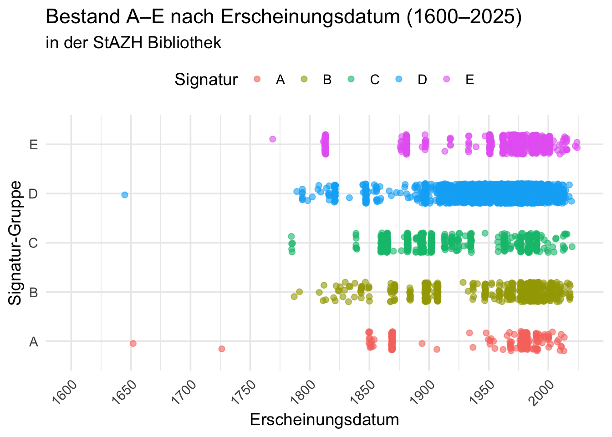
Zusatz: als Tabelle
Die Daten werden so gruppiert, dass für jedes Jahr (
publication_date) und jede Signatur-Gruppe (signatur_gruppe, also A–E) gezählt wird, wie viele Bücher es jeweils gibt.Das Ergebnis ist eine Tabelle, in der für jedes Jahr und jede Gruppe steht, wie viele Bücher es gibt (Spalte:
anzahl). Figure 3
bib_A_bis_E_tabelle <- bib_A_bis_E %>%
group_by(signatur_gruppe, publication_date) %>%
summarise(Anzahl = n(), .groups = "drop")
print(bib_A_bis_E_tabelle)# A tibble: 405 × 3
signatur_gruppe publication_date Anzahl
<chr> <dbl> <int>
1 A 1652 1
2 A 1726 1
3 A 1849 1
4 A 1850 6
5 A 1851 3
6 A 1852 2
7 A 1853 1
8 A 1854 1
9 A 1869 57
10 A 1894 1
# ℹ 395 more rowskable(bib_A_bis_E_tabelle)| signatur_gruppe | publication_date | Anzahl |
|---|---|---|
| A | 1652 | 1 |
| A | 1726 | 1 |
| A | 1849 | 1 |
| A | 1850 | 6 |
| A | 1851 | 3 |
| A | 1852 | 2 |
| A | 1853 | 1 |
| A | 1854 | 1 |
| A | 1869 | 57 |
| A | 1894 | 1 |
| A | 1907 | 1 |
| A | 1934 | 1 |
| A | 1937 | 1 |
| A | 1948 | 1 |
| A | 1950 | 1 |
| A | 1951 | 2 |
| A | 1952 | 1 |
| A | 1954 | 1 |
| A | 1955 | 1 |
| A | 1962 | 1 |
| A | 1965 | 1 |
| A | 1967 | 1 |
| A | 1968 | 5 |
| A | 1969 | 3 |
| A | 1971 | 1 |
| A | 1973 | 1 |
| A | 1976 | 1 |
| A | 1977 | 10 |
| A | 1978 | 2 |
| A | 1979 | 14 |
| A | 1980 | 2 |
| A | 1982 | 28 |
| A | 1983 | 1 |
| A | 1984 | 1 |
| A | 1987 | 2 |
| A | 1989 | 1 |
| A | 1990 | 14 |
| A | 1991 | 2 |
| A | 1992 | 2 |
| A | 1993 | 2 |
| A | 1995 | 1 |
| A | 1997 | 3 |
| A | 2000 | 7 |
| A | 2002 | 1 |
| A | 2003 | 1 |
| A | 2007 | 1 |
| A | 2008 | 1 |
| A | 2010 | 1 |
| A | 2011 | 3 |
| A | 2013 | 2 |
| B | 1787 | 1 |
| B | 1791 | 1 |
| B | 1808 | 1 |
| B | 1811 | 1 |
| B | 1812 | 1 |
| B | 1813 | 1 |
| B | 1820 | 1 |
| B | 1821 | 1 |
| B | 1822 | 1 |
| B | 1824 | 1 |
| B | 1825 | 1 |
| B | 1826 | 1 |
| B | 1828 | 1 |
| B | 1829 | 1 |
| B | 1830 | 1 |
| B | 1832 | 1 |
| B | 1833 | 1 |
| B | 1834 | 1 |
| B | 1837 | 1 |
| B | 1838 | 1 |
| B | 1843 | 9 |
| B | 1847 | 1 |
| B | 1849 | 1 |
| B | 1850 | 4 |
| B | 1868 | 8 |
| B | 1871 | 16 |
| B | 1884 | 10 |
| B | 1897 | 45 |
| B | 1899 | 13 |
| B | 1905 | 3 |
| B | 1907 | 52 |
| B | 1929 | 1 |
| B | 1933 | 1 |
| B | 1937 | 7 |
| B | 1941 | 1 |
| B | 1947 | 26 |
| B | 1952 | 3 |
| B | 1954 | 1 |
| B | 1955 | 1 |
| B | 1959 | 9 |
| B | 1961 | 2 |
| B | 1963 | 1 |
| B | 1965 | 1 |
| B | 1966 | 11 |
| B | 1968 | 7 |
| B | 1969 | 1 |
| B | 1970 | 10 |
| B | 1971 | 1 |
| B | 1975 | 1 |
| B | 1976 | 1 |
| B | 1977 | 29 |
| B | 1979 | 1 |
| B | 1980 | 4 |
| B | 1981 | 2 |
| B | 1982 | 20 |
| B | 1983 | 4 |
| B | 1984 | 1 |
| B | 1985 | 53 |
| B | 1986 | 6 |
| B | 1988 | 32 |
| B | 1989 | 2 |
| B | 1990 | 1 |
| B | 1991 | 40 |
| B | 1992 | 6 |
| B | 1996 | 17 |
| B | 1997 | 3 |
| B | 1998 | 1 |
| B | 1999 | 1 |
| B | 2001 | 18 |
| B | 2002 | 20 |
| B | 2003 | 1 |
| B | 2004 | 2 |
| B | 2005 | 2 |
| B | 2006 | 2 |
| B | 2007 | 11 |
| B | 2008 | 1 |
| B | 2009 | 1 |
| B | 2010 | 9 |
| B | 2012 | 1 |
| B | 2014 | 1 |
| B | 2015 | 1 |
| B | 2016 | 1 |
| B | 2018 | 8 |
| C | 1785 | 5 |
| C | 1839 | 7 |
| C | 1860 | 35 |
| C | 1865 | 56 |
| C | 1870 | 1 |
| C | 1877 | 1 |
| C | 1879 | 1 |
| C | 1882 | 52 |
| C | 1889 | 6 |
| C | 1890 | 1 |
| C | 1893 | 25 |
| C | 1894 | 24 |
| C | 1895 | 21 |
| C | 1899 | 1 |
| C | 1902 | 49 |
| C | 1913 | 14 |
| C | 1919 | 17 |
| C | 1923 | 6 |
| C | 1925 | 8 |
| C | 1929 | 1 |
| C | 1930 | 1 |
| C | 1932 | 1 |
| C | 1935 | 24 |
| C | 1947 | 1 |
| C | 1958 | 4 |
| C | 1961 | 1 |
| C | 1963 | 28 |
| C | 1964 | 1 |
| C | 1965 | 2 |
| C | 1966 | 1 |
| C | 1968 | 2 |
| C | 1969 | 2 |
| C | 1972 | 1 |
| C | 1974 | 4 |
| C | 1975 | 1 |
| C | 1976 | 1 |
| C | 1977 | 16 |
| C | 1978 | 1 |
| C | 1982 | 3 |
| C | 1983 | 14 |
| C | 1984 | 27 |
| C | 1985 | 2 |
| C | 1986 | 1 |
| C | 1987 | 2 |
| C | 1988 | 1 |
| C | 1990 | 31 |
| C | 1993 | 1 |
| C | 1994 | 2 |
| C | 1996 | 1 |
| C | 1997 | 1 |
| C | 1999 | 2 |
| C | 2000 | 1 |
| C | 2004 | 1 |
| C | 2005 | 1 |
| C | 2006 | 2 |
| C | 2012 | 2 |
| C | 2013 | 2 |
| C | 2014 | 3 |
| C | 2015 | 1 |
| C | 2016 | 1 |
| C | 2020 | 1 |
| D | 1645 | 1 |
| D | 1789 | 1 |
| D | 1794 | 6 |
| D | 1798 | 1 |
| D | 1802 | 1 |
| D | 1807 | 1 |
| D | 1808 | 1 |
| D | 1809 | 1 |
| D | 1814 | 1 |
| D | 1816 | 6 |
| D | 1821 | 30 |
| D | 1833 | 1 |
| D | 1844 | 1 |
| D | 1845 | 2 |
| D | 1846 | 1 |
| D | 1847 | 30 |
| D | 1849 | 1 |
| D | 1854 | 2 |
| D | 1856 | 9 |
| D | 1859 | 2 |
| D | 1860 | 1 |
| D | 1867 | 1 |
| D | 1868 | 1 |
| D | 1873 | 1 |
| D | 1876 | 1 |
| D | 1880 | 2 |
| D | 1881 | 1 |
| D | 1882 | 1 |
| D | 1884 | 1 |
| D | 1888 | 3 |
| D | 1889 | 1 |
| D | 1890 | 5 |
| D | 1892 | 1 |
| D | 1893 | 1 |
| D | 1894 | 4 |
| D | 1895 | 5 |
| D | 1896 | 5 |
| D | 1897 | 133 |
| D | 1898 | 2 |
| D | 1900 | 1 |
| D | 1901 | 1 |
| D | 1902 | 5 |
| D | 1905 | 1 |
| D | 1906 | 3 |
| D | 1907 | 2 |
| D | 1908 | 7 |
| D | 1909 | 15 |
| D | 1911 | 32 |
| D | 1912 | 5 |
| D | 1913 | 6 |
| D | 1914 | 4 |
| D | 1915 | 4 |
| D | 1916 | 4 |
| D | 1917 | 23 |
| D | 1918 | 11 |
| D | 1919 | 13 |
| D | 1920 | 6 |
| D | 1921 | 6 |
| D | 1922 | 6 |
| D | 1923 | 7 |
| D | 1924 | 13 |
| D | 1925 | 19 |
| D | 1926 | 12 |
| D | 1927 | 13 |
| D | 1928 | 8 |
| D | 1929 | 17 |
| D | 1930 | 10 |
| D | 1931 | 14 |
| D | 1932 | 15 |
| D | 1933 | 14 |
| D | 1934 | 13 |
| D | 1935 | 10 |
| D | 1936 | 85 |
| D | 1937 | 19 |
| D | 1938 | 9 |
| D | 1939 | 11 |
| D | 1940 | 12 |
| D | 1941 | 81 |
| D | 1942 | 123 |
| D | 1943 | 73 |
| D | 1944 | 9 |
| D | 1945 | 4 |
| D | 1946 | 6 |
| D | 1947 | 113 |
| D | 1948 | 4 |
| D | 1949 | 3 |
| D | 1950 | 5 |
| D | 1951 | 65 |
| D | 1952 | 10 |
| D | 1953 | 7 |
| D | 1954 | 5 |
| D | 1955 | 11 |
| D | 1956 | 9 |
| D | 1957 | 6 |
| D | 1958 | 25 |
| D | 1959 | 28 |
| D | 1960 | 125 |
| D | 1961 | 67 |
| D | 1962 | 37 |
| D | 1963 | 49 |
| D | 1964 | 33 |
| D | 1965 | 33 |
| D | 1966 | 39 |
| D | 1967 | 47 |
| D | 1968 | 41 |
| D | 1969 | 29 |
| D | 1970 | 67 |
| D | 1971 | 28 |
| D | 1972 | 41 |
| D | 1973 | 78 |
| D | 1974 | 48 |
| D | 1975 | 90 |
| D | 1976 | 48 |
| D | 1977 | 125 |
| D | 1978 | 111 |
| D | 1979 | 40 |
| D | 1980 | 33 |
| D | 1981 | 38 |
| D | 1982 | 30 |
| D | 1983 | 49 |
| D | 1984 | 39 |
| D | 1985 | 48 |
| D | 1986 | 41 |
| D | 1987 | 15 |
| D | 1988 | 26 |
| D | 1989 | 17 |
| D | 1990 | 2 |
| D | 1991 | 41 |
| D | 1993 | 2 |
| D | 1994 | 45 |
| D | 1995 | 58 |
| D | 1996 | 1 |
| D | 1997 | 3 |
| D | 1999 | 21 |
| D | 2000 | 10 |
| D | 2001 | 22 |
| D | 2002 | 2 |
| D | 2003 | 4 |
| D | 2004 | 7 |
| D | 2005 | 2 |
| D | 2006 | 18 |
| D | 2007 | 17 |
| D | 2008 | 20 |
| D | 2009 | 12 |
| D | 2010 | 5 |
| D | 2011 | 1 |
| D | 2012 | 7 |
| D | 2013 | 8 |
| D | 2014 | 2 |
| D | 2015 | 1 |
| D | 2017 | 1 |
| D | 2018 | 1 |
| D | 2019 | 1 |
| E | 1769 | 1 |
| E | 1811 | 1 |
| E | 1813 | 55 |
| E | 1876 | 3 |
| E | 1877 | 6 |
| E | 1881 | 75 |
| E | 1894 | 1 |
| E | 1897 | 9 |
| E | 1913 | 1 |
| E | 1918 | 5 |
| E | 1933 | 7 |
| E | 1939 | 1 |
| E | 1947 | 1 |
| E | 1951 | 53 |
| E | 1952 | 5 |
| E | 1962 | 31 |
| E | 1965 | 2 |
| E | 1967 | 12 |
| E | 1969 | 34 |
| E | 1970 | 1 |
| E | 1971 | 1 |
| E | 1972 | 45 |
| E | 1973 | 1 |
| E | 1974 | 61 |
| E | 1975 | 4 |
| E | 1976 | 23 |
| E | 1977 | 3 |
| E | 1978 | 18 |
| E | 1979 | 11 |
| E | 1980 | 2 |
| E | 1981 | 1 |
| E | 1982 | 6 |
| E | 1983 | 1 |
| E | 1984 | 2 |
| E | 1985 | 2 |
| E | 1986 | 1 |
| E | 1987 | 35 |
| E | 1989 | 8 |
| E | 1990 | 27 |
| E | 1991 | 7 |
| E | 1993 | 2 |
| E | 1995 | 4 |
| E | 1996 | 16 |
| E | 1997 | 27 |
| E | 1998 | 1 |
| E | 1999 | 2 |
| E | 2001 | 28 |
| E | 2004 | 1 |
| E | 2005 | 1 |
| E | 2008 | 1 |
| E | 2009 | 1 |
| E | 2010 | 1 |
| E | 2012 | 4 |
| E | 2014 | 3 |
| E | 2015 | 6 |
| E | 2016 | 1 |
| E | 2023 | 1 |
| E | 2024 | 2 |
Bestand A-E nach Erscheinungsdatum (vor 1800)
Es werden wieder nur Bücher mit Signatur A–E genommen. Die Signatur-Gruppe wird als neue Spalte angelegt. Dann werden nur Bücher berücksichtigt, die vor 1800 erschienen sind.
Ein Streudiagramm wird erstellt, das zeigt:
x-Achse: Erscheinungsjahr (vor 1800)
y-Achse: Signatur-Gruppe (A–E)
Farbe: Jede Gruppe hat eine eigene Farbe
Die Punkte zeigen, welche Bücher aus A–E vor 1800 erschienen sind.
# Aggregieren
bib_A_bis_E_agg <- bib_A_bis_E %>%
group_by(publication_date, signatur_gruppe) %>%
summarise(anzahl = n(), .groups = "drop")
# Daten filtern und gruppieren
bib_A_bis_E <- bib_bestand_besenrein %>%
filter(grepl("^[A-E]", permanent_call_number)) %>%
mutate(signatur_gruppe = substr(permanent_call_number, 1, 1)) %>%
filter(publication_date < 1800) # Nur vor 1800
# Plot Bestand A–E nach Erscheinungsdatum (vor 1800)
ggplot(bib_A_bis_E, aes(x = publication_date, y = signatur_gruppe, color = signatur_gruppe)) +
geom_jitter(width = 0.5, height = 0.2, alpha = 0.6, size = 2) +
scale_y_discrete(limits = c("A", "B", "C", "D", "E")) +
scale_x_continuous(breaks = seq(1500, 1800, 50), limits = c(1500, 1800)) +
labs(
title = "Bestand A–E nach Erscheinungsdatum (vor 1800)",
subtitle = "in der StAZH Bibliothek",
x = "Erscheinungsdatum",
y = "Signatur-Gruppe",
color = "Signatur") +
theme_minimal(base_size = 14) +
theme(
axis.text.x = element_text(angle = 45, hjust = 1),
legend.position = "top")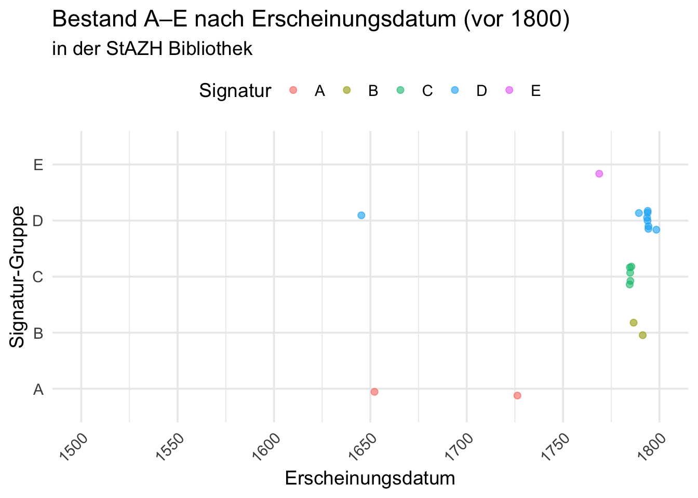
Bestand A-E nach Erscheinungsdatum, Einzeldarstellungen
Intervalle definieren:
breakslegt Jahresgrenzen (1800–2026),labelserstellt menschenlesbare Intervallbeschriftungen wie “1800–1849”Daten filtern:
filterwählt Bücher mit Signaturen A–E und Erscheinungsjahren zwischen 1600–2025 aus.Neue Spalten erstellen:
signatur_gruppe: Extrahiert den ersten Buchstaben der Signatur (A–E)intervall: Ordnet jedes Buch seinem 50-Jahres-Intervall zu (mitcut()undright=FALSEfür linksinklusive Intervalle)
Jitter-Plot:
geom_jitterverteilt Punkte leicht zufällig, um Überlappungen zu vermeiden.x= Erscheinungsjahry= Signaturgruppe (A–E)Farbe kodiert die Signaturgruppe
Achsenanpassungen:
scale_x_continuouszoomt auf das aktuelle Intervall (z.B. 1800–1849)scale_y_discreteerzwingt die Sortierung A–E[^].
Design:
Drehung der Jahreszahlen (
angle=45)Legende oben (
legend.position="top")Modernes Minimal-Design (
theme_minimal)
# Intervallgrenzen und Labels
breaks <- c(1800, 1850, 1900, 1950, 2000, 2026)
labels <- c("1800–1849", "1850–1899", "1900–1949", "1950–1999", "2000–2025")
bib_A_bis_E <- bib_bestand_besenrein %>%
filter(grepl("^[A-E]", permanent_call_number),
publication_date >= 1600, publication_date <= 2025) %>%
mutate(
signatur_gruppe = substr(permanent_call_number, 1, 1),
intervall = cut(publication_date, breaks = breaks, labels = labels, right = FALSE))
for (int in labels) {
daten <- bib_A_bis_E %>% filter(intervall == int)
p <- ggplot(daten, aes(x = publication_date, y = signatur_gruppe, color = signatur_gruppe)) +
geom_jitter(width = 0.5, height = 0.2, alpha = 0.7, size = 2) +
scale_y_discrete(limits = c("A", "B", "C", "D", "E")) +
scale_x_continuous(limits = range(breaks[which(labels == int):(which(labels == int)+1)])) +
labs(
title = paste("Bestand A–E nach Erscheinungsdatum (", int, ")", sep = ""),
subtitle = "in der StAZH Bibliothek",
x = "Erscheinungsdatum",
y = "Signatur-Gruppe",
color = "Signatur"
) +
theme_minimal(base_size = 14) +
theme(
axis.text.x = element_text(angle = 45, hjust = 1),
legend.position = "top"
)
print(p)}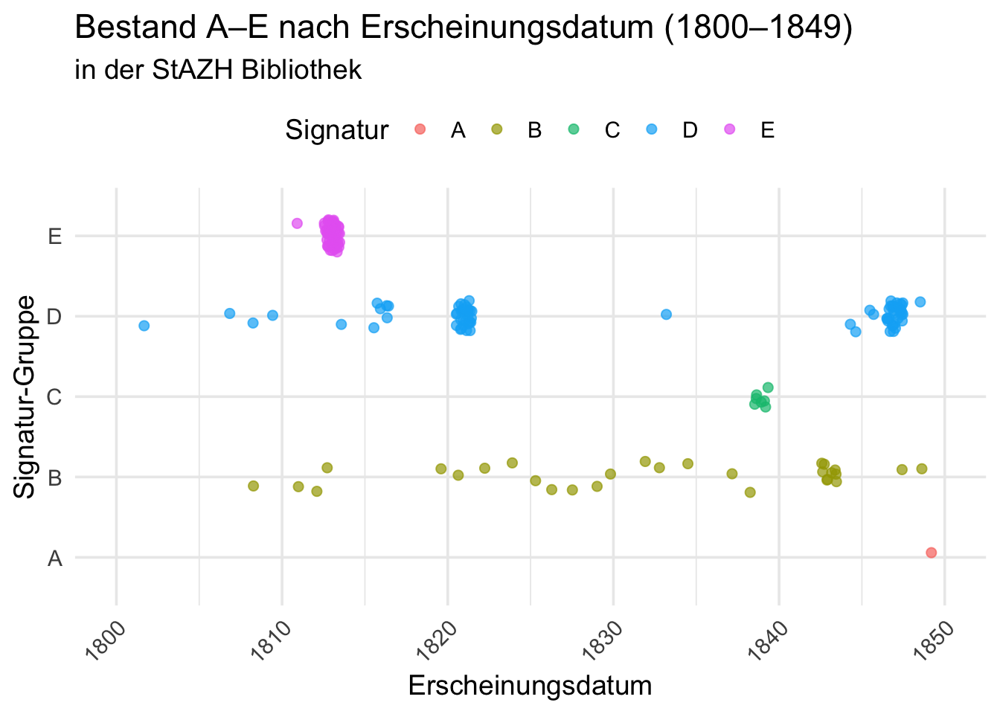
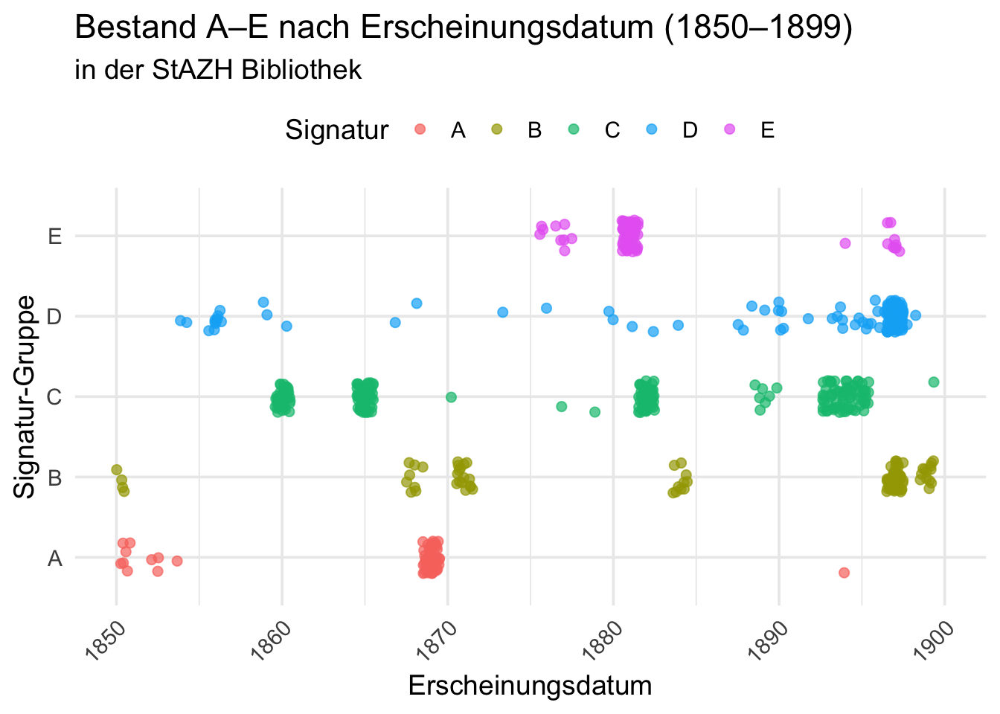
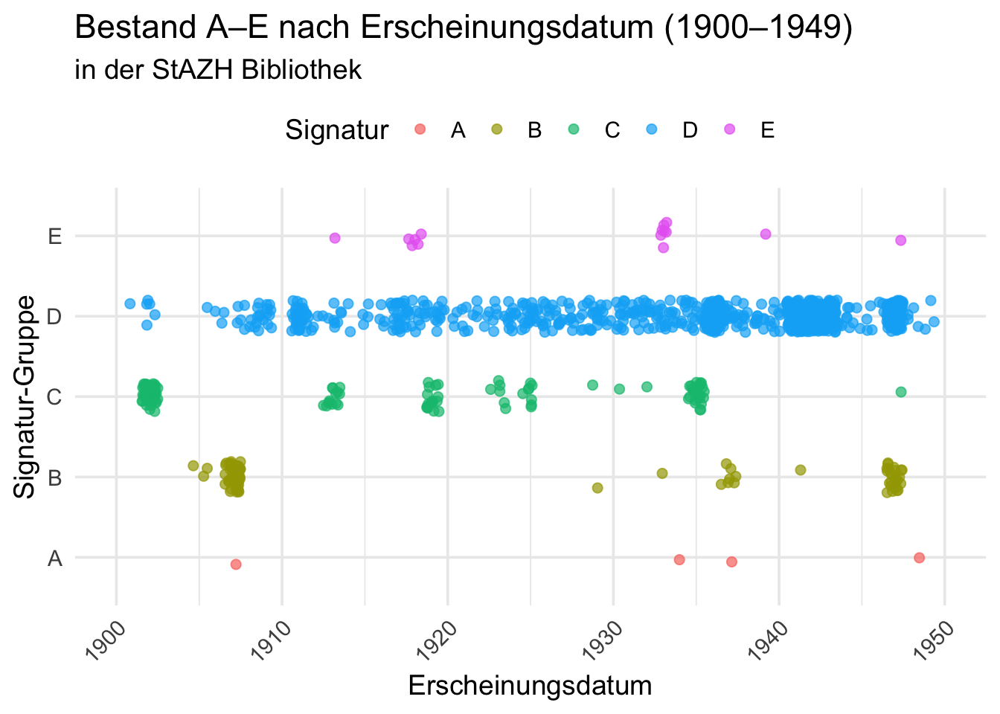
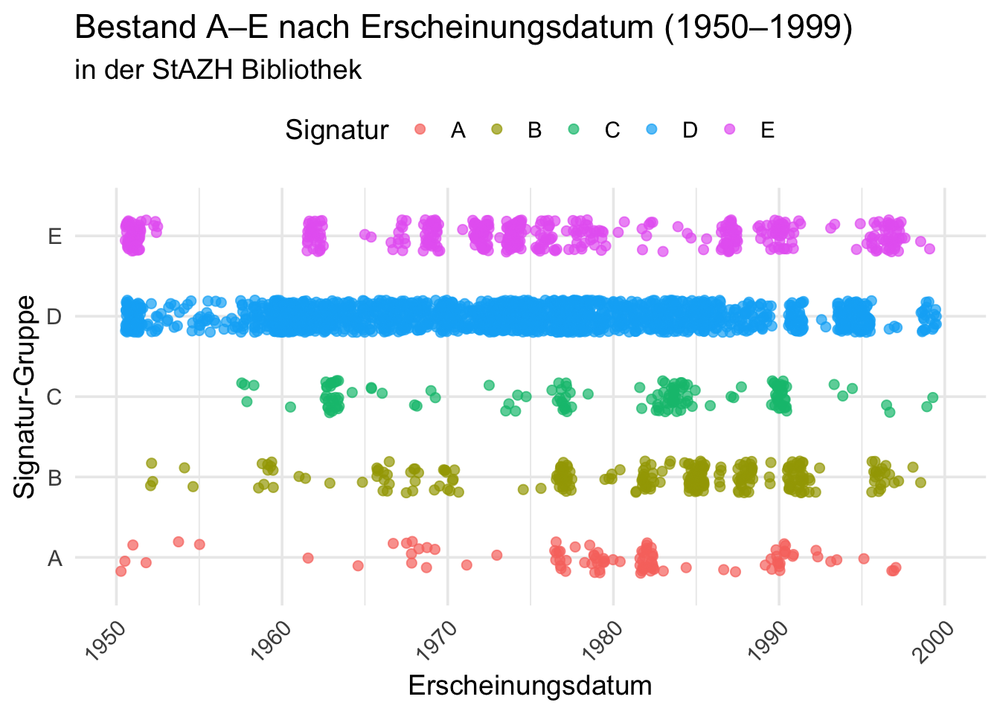
Teil 2 - Balkendiagramme
Hier versuche ich nun von jedem Bestand für jeden 50-Jahre-Abschnitt eine eigene Graphik zu erstellen. Ist jeweils die erste generiert, sind folgende einfacher. In gewissen Bestände, haben wir aus einer bestimmten Zeitspanne weniger als 10 Publikationen. Diese habe ich graphisch nicht dargestellt.
Vor 1800
A
bib_gefiltert_vor_1800_A <- filter(bib_bestand_besenrein,(publication_date <=1800),grepl("^A", permanent_call_number) | grepl("A.*III|III.*A", permanent_call_number))
ggplot(bib_gefiltert_vor_1800_A, mapping=aes(x=publication_date))+
geom_bar()+labs(title="Bestand A nach Erscheinungsdatum (vor 1800)",
subtitle="in der StAZH Bibliothek")+theme_stat()+labs(x = "Erscheinungsdatum", y = "Anzahl Medien")+geom_text(stat='count', aes(label=after_stat(count)), vjust=-0.3)+geom_bar(fill = "steelblue")+
scale_x_continuous(breaks = seq(1600, 1800, by = 25))count(bib_gefiltert_vor_1800_A)# A tibble: 1 × 1
n
<int>
1 81B
In unserem B-Bestand befinden sich zwischen 1600 und 1800 nur 3 Medien. Diese erschienen1726, 1787 und 1791. Hier verzichte ich auf eine graphische Darstellung.
bib_gefiltert_vor_1800_B <- filter(bib_bestand_besenrein,(publication_date <=1800),grepl("^B", permanent_call_number) | grepl("B.*III|III.*B", permanent_call_number))
invisible(capture.output(glimpse(bib_gefiltert_vor_1800_B)))
#Rows: 3
#Columns: 16
count(bib_gefiltert_vor_1800_B)# A tibble: 1 × 1
n
<int>
1 3C
In unserem C-Bestand befinden sich zwischen 1600 und 1800 nur 2 Medien. Diese erschienen 1652 und 1726. Hier verzichte ich auf eine graphische Darstellung.
bib_gefiltert_vor_1800_C <- filter(bib_bestand_besenrein,(publication_date <=1800),grepl("^A", permanent_call_number) | grepl("C.*III|III.*C", permanent_call_number))
invisible(capture.output(glimpse(bib_gefiltert_vor_1800_C)))
#Rows: 2
#Columns: 16
count(bib_gefiltert_vor_1800_C)# A tibble: 1 × 1
n
<int>
1 2D
In unserem D-Bestand befinden sich zwischen 1600 und 1800 nur 2 Medien. Diese erschienen 1652 und 1726. Hier verzichte ich auf eine graphische Darstellung.
bib_gefiltert_vor_1800_D <- filter(bib_bestand_besenrein,(publication_date <=1800),grepl("^A", permanent_call_number) | grepl("D.*III|III.*D", permanent_call_number))
invisible(capture.output(glimpse(bib_gefiltert_vor_1800_D)))
#Rows: 2
#Columns: 16
count(bib_gefiltert_vor_1800_D)# A tibble: 1 × 1
n
<int>
1 2E
In unserem E-Bestand befinden sich zwischen 1600 und 1800 nur 2 Medien. Diese erschienen 1652 und 1726. Hier verzichte ich auf eine graphische Darstellung.
bib_gefiltert_vor_1800_E <- filter(bib_bestand_besenrein,(publication_date <=1800),grepl("^A", permanent_call_number) | grepl("E.*III|III.*E", permanent_call_number))
invisible(capture.output(glimpse(bib_gefiltert_vor_1800_E)))
#Rows: 2
#Columns: 16
count(bib_gefiltert_vor_1800_E)# A tibble: 1 × 1
n
<int>
1 21800 - 1850
A
bib_gefiltert_1800_1850_A <- filter(bib_bestand, between(publication_date, 1800, 1850),grepl("^A", permanent_call_number) | grepl("A.*III|III.*A", permanent_call_number))
ggplot(bib_gefiltert_1800_1850_A, mapping=aes(x=publication_date))+
geom_bar()+labs(title="Bestand A nach Erscheinungsdatum (1800-1850)",
subtitle="in der StAZH Bibliothek")+theme_stat()+labs(x = "Erscheinungsdatum", y = "Anzahl Medien")+geom_text(stat='count', aes(label=after_stat(count)), vjust=-0.3)+geom_bar(fill = "steelblue")+
scale_x_continuous(breaks = seq(1800, 1850, by = 5))
count(bib_gefiltert_1800_1850_A)# A tibble: 1 × 1
n
<int>
1 187B
bib_gefiltert_1800_1850_B <- filter(bib_bestand, between(publication_date, 1800, 1850),grepl("^B", permanent_call_number) | grepl("B.*III|III.*B", permanent_call_number))
ggplot(bib_gefiltert_1800_1850_B, mapping=aes(x=publication_date))+
geom_bar()+labs(title="Bestand B nach Erscheinungsdatum (1800-1850)",
subtitle="in der StAZH Bibliothek")+theme_stat()+labs(x = "Erscheinungsdatum", y = "Anzahl Medien")+geom_bar(fill = "blue1")+
scale_x_continuous(breaks = seq(1800, 1850, by = 5))
count(bib_gefiltert_1800_1850_B)# A tibble: 1 × 1
n
<int>
1 24C
bib_gefiltert_1800_1850_C <- filter(bib_bestand, between(publication_date, 1800, 1850),grepl("^C", permanent_call_number) | grepl("C.*III|III.*C", permanent_call_number))
ggplot(bib_gefiltert_1800_1850_C, mapping=aes(x=publication_date))+
geom_bar()+labs(title="Bestand C nach Erscheinungsdatum (1800-1850)",
subtitle="in der StAZH Bibliothek")+theme_stat()+labs(x = "Erscheinungsdatum", y = "Anzahl Medien")+geom_text(stat='count', aes(label=after_stat(count)), vjust=-0.3)+geom_bar(fill = "blue")+
scale_x_continuous(breaks = seq(1800, 1850, by = 5))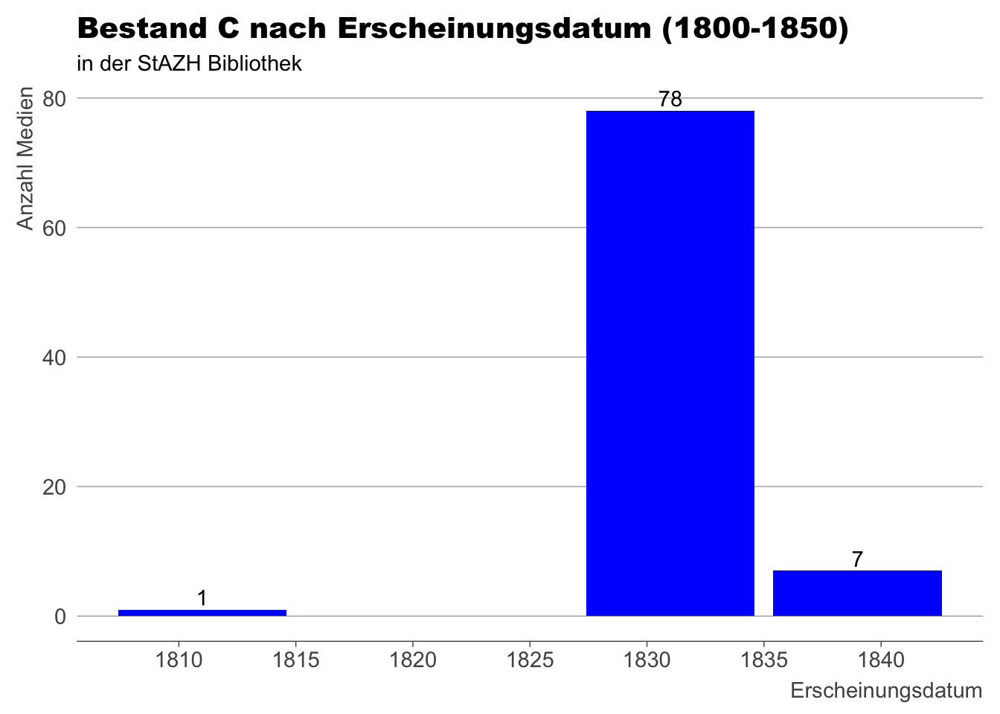
count(bib_gefiltert_1800_1850_C)# A tibble: 1 × 1
n
<int>
1 86D
bib_gefiltert_1800_1850_D <- filter(bib_bestand, between(publication_date, 1800, 1850),grepl("^D", permanent_call_number) | grepl("C.*III|III.*D", permanent_call_number))
ggplot(bib_gefiltert_1800_1850_D, mapping=aes(x=publication_date))+
geom_bar()+labs(title="Bestand D nach Erscheinungsdatum (1800-1850)",
subtitle="in der StAZH Bibliothek")+theme_stat()+labs(x = "Erscheinungsdatum", y = "Anzahl Medien")+geom_text(stat='count', aes(label=after_stat(count)), vjust=-0.3)+geom_bar(fill = "blue4")+
scale_x_continuous(breaks = seq(1800, 1850, by = 5))
count(bib_gefiltert_1800_1850_D)# A tibble: 1 × 1
n
<int>
1 47E
bib_gefiltert_1800_1850_E <- filter(bib_bestand, between(publication_date, 1800, 1850),grepl("^E", permanent_call_number) | grepl("E.*III|III.*E", permanent_call_number))
ggplot(bib_gefiltert_1800_1850_E, mapping=aes(x=publication_date))+
geom_bar()+labs(title="Bestand E nach Erscheinungsdatum (1800-1850)",
subtitle="in der StAZH Bibliothek")+theme_stat()+labs(x = "Erscheinungsdatum", y = "Anzahl Medien")+geom_text(stat='count', aes(label=after_stat(count)), vjust=-0.3)+geom_bar(fill = "blue4")+
scale_x_continuous(breaks = seq(1800, 1850, by = 5))
count(bib_gefiltert_1800_1850_E)# A tibble: 1 × 1
n
<int>
1 2111851 - 1899
A
bib_gefiltert_1851_1899_A <- filter(bib_bestand, between(publication_date, 1851, 1899),grepl("^A", permanent_call_number) | grepl("A.*III|III.*A", permanent_call_number))
ggplot(bib_gefiltert_1851_1899_A, mapping=aes(x=publication_date))+
geom_bar()+labs(title="Bestand A nach Erscheinungsdatum (1851-1899)",
subtitle="in der StAZH Bibliothek")+theme_stat()+labs(x = "Erscheinungsdatum", y = "Anzahl Medien")+geom_text(stat='count', aes(label=after_stat(count)), vjust=-0.3)+geom_bar(fill = "steelblue")+
scale_x_continuous(breaks = seq(1851, 1899, by = 5))
count(bib_gefiltert_1851_1899_A)# A tibble: 1 × 1
n
<int>
1 135B
bib_gefiltert_1851_1899_B <- filter(bib_bestand, between(publication_date, 1851, 1899),grepl("^B", permanent_call_number) | grepl("B.*III|III.*B", permanent_call_number))
ggplot(bib_gefiltert_1851_1899_B, mapping=aes(x=publication_date))+
geom_bar()+labs(title="Bestand B nach Erscheinungsdatum (1851-1899)",
subtitle="in der StAZH Bibliothek")+theme_stat()+labs(x = "Erscheinungsdatum", y = "Anzahl Medien")+geom_text(stat='count', aes(label=after_stat(count)), vjust=-0.3)+geom_bar(fill = "blue")+
scale_x_continuous(breaks = seq(1851, 1899, by = 5))
count(bib_gefiltert_1851_1899_B)# A tibble: 1 × 1
n
<int>
1 47C
bib_gefiltert_1851_1899_C <- filter(bib_bestand, between(publication_date, 1851, 1899),grepl("^A", permanent_call_number) | grepl("C.*III|III.*C", permanent_call_number))
ggplot(bib_gefiltert_1851_1899_C, mapping=aes(x=publication_date))+
geom_bar()+labs(title="Bestand C nach Erscheinungsdatum (1851-1899)",
subtitle="in der StAZH Bibliothek")+theme_stat()+labs(x = "Erscheinungsdatum", y = "Anzahl Medien")+geom_text(stat='count', aes(label=after_stat(count)), vjust=-0.3)+geom_bar(fill = "blue3")+
scale_x_continuous(breaks = seq(1851, 1899, by = 5))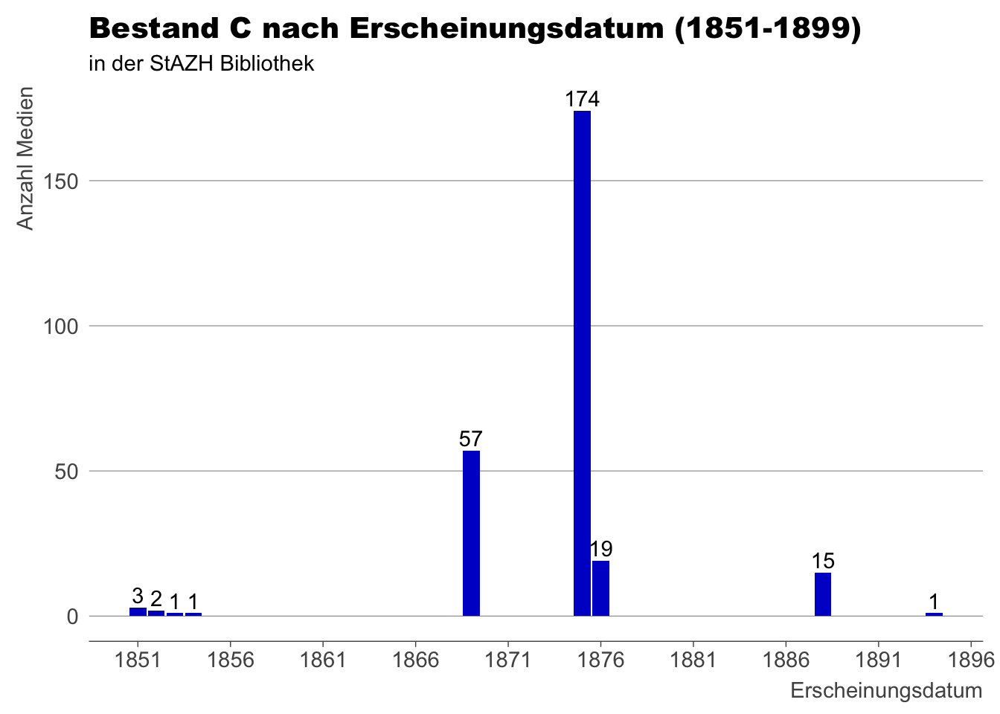
count(bib_gefiltert_1851_1899_C)# A tibble: 1 × 1
n
<int>
1 273D
bib_gefiltert_1851_1899_D <- filter(bib_bestand, between(publication_date, 1851, 1899),grepl("^D", permanent_call_number) | grepl("D.*III|III.*D", permanent_call_number))
ggplot(bib_gefiltert_1851_1899_D, mapping=aes(x=publication_date))+
geom_bar()+labs(title="Bestand D nach Erscheinungsdatum (1851-1899)",
subtitle="in der StAZH Bibliothek")+theme_stat()+labs(x = "Erscheinungsdatum", y = "Anzahl Medien")+geom_text(stat='count', aes(label=after_stat(count)), vjust=-0.3,size=3)+geom_bar(fill = "blue3")+
scale_x_continuous(breaks = seq(1851, 1899, by = 5))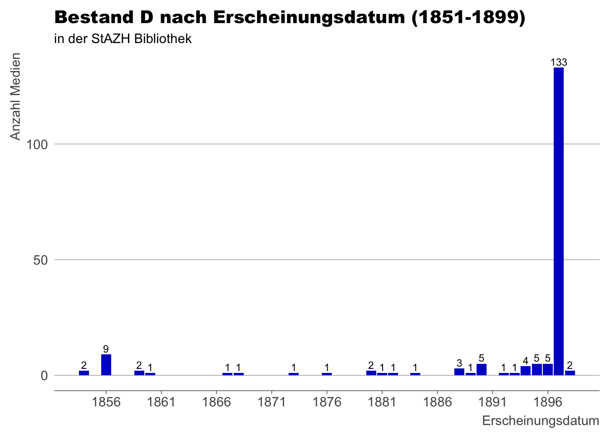
count(bib_gefiltert_1851_1899_D)# A tibble: 1 × 1
n
<int>
1 183E
bib_gefiltert_1851_1899_E <- filter(bib_bestand, between(publication_date, 1851, 1899),grepl("^E", permanent_call_number) | grepl("E.*III|III.*E", permanent_call_number))
ggplot(bib_gefiltert_1851_1899_E, mapping=aes(x=publication_date))+
geom_bar()+labs(title="Bestand E nach Erscheinungsdatum (1851-1899)",
subtitle="in der StAZH Bibliothek")+theme_stat()+labs(x = "Erscheinungsdatum", y = "Anzahl Medien")+geom_text(stat='count', aes(label=after_stat(count)), vjust=-0.3)+geom_bar(fill = "blue3")+
scale_x_continuous(breaks = seq(1851, 1899, by = 5))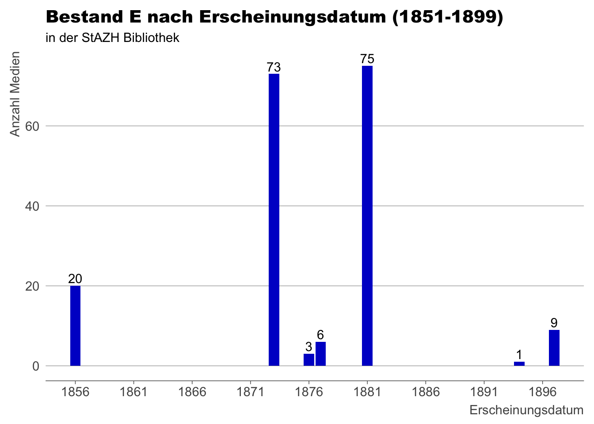
count(bib_gefiltert_1851_1899_E)# A tibble: 1 × 1
n
<int>
1 1871900 - 1950
A
bib_gefiltert_1900_1950_A <- filter(bib_bestand_besenrein, between(publication_date, 1900, 1950),grepl("^A", permanent_call_number) | grepl("A.*III|III.*A", permanent_call_number))
ggplot(bib_gefiltert_1900_1950_A, mapping=aes(x=publication_date))+
geom_bar()+labs(title="Bestand A nach Erscheinungsdatum (1900-1950)",
subtitle="in der StAZH Bibliothek")+theme_stat()+labs(x = "Erscheinungsdatum", y = "Anzahl Medien")+geom_bar(fill = "blue3")+
scale_x_continuous(breaks = seq(1900, 1950, by = 5))count(bib_gefiltert_1900_1950_A)# A tibble: 1 × 1
n
<int>
1 10B
In unserem B-Bestand befinden sich zwischen 1900 und 1950 nur 5 Medien. Diese erschienen 1907, 1934, 1937, 1948 und 1950. Hier verzichte ich auf eine graphische Darstellung.
bib_gefiltert_1900_1950_B <- filter(bib_bestand_besenrein, between(publication_date, 1900, 1950),grepl("^A", permanent_call_number) | grepl("B.*III|III.*B", permanent_call_number))
invisible(capture.output(glimpse(bib_gefiltert_1900_1950_B)))
#Rows: 5
#Columns: 16
count(bib_gefiltert_1900_1950_B)# A tibble: 1 × 1
n
<int>
1 5C
bib_gefiltert_1900_1950_C <- filter(bib_bestand_besenrein, between(publication_date, 1900, 1950),grepl("^C", permanent_call_number) | grepl("C.*III|III.*C", permanent_call_number))
ggplot(bib_gefiltert_1900_1950_C, mapping=aes(x=publication_date))+
geom_bar()+labs(title="Bestand C nach Erscheinungsdatum (1900-1950)",
subtitle="in der StAZH Bibliothek")+theme_stat()+labs(x = "Erscheinungsdatum", y = "Anzahl Medien")+geom_bar(fill = "blue3")+
scale_x_continuous(breaks = seq(1900, 1950, by = 5))+geom_text(stat='count', aes(label=after_stat(count)), vjust=-0.3, size=3)count(bib_gefiltert_1900_1950_C)# A tibble: 1 × 1
n
<int>
1 185D
bib_gefiltert_1900_1950_D <- filter(bib_bestand_besenrein, between(publication_date, 1900, 1950),grepl("^D", permanent_call_number) | grepl("D.*III|III.*D", permanent_call_number))
ggplot(bib_gefiltert_1900_1950_D, mapping=aes(x=publication_date))+
geom_bar()+labs(title="Bestand D nach Erscheinungsdatum (1900-1950)",
subtitle="in der StAZH Bibliothek")+theme_stat()+labs(x = "Erscheinungsdatum", y = "Anzahl Medien")+geom_bar(fill = "blue3")+
scale_x_continuous(breaks = seq(1900, 1950, by = 5))+geom_text(stat='count', aes(label=after_stat(count)), vjust=-0.3, size=2.5)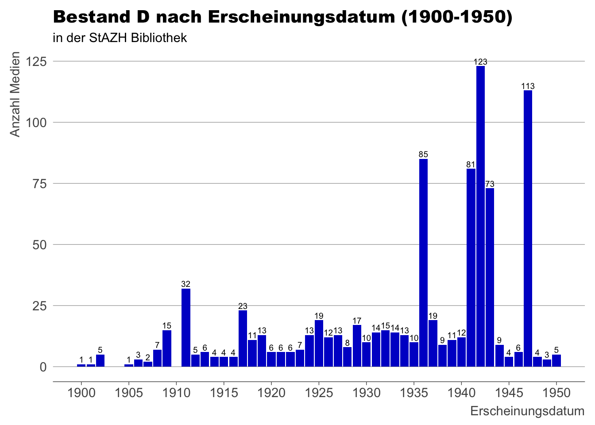
count(bib_gefiltert_1900_1950_D)# A tibble: 1 × 1
n
<int>
1 877E
bib_gefiltert_1900_1950_E <- filter(bib_bestand_besenrein, between(publication_date, 1900, 1950),grepl("^E", permanent_call_number) | grepl("E.*III|III.*E", permanent_call_number))
ggplot(bib_gefiltert_1900_1950_E, mapping=aes(x=publication_date))+
geom_bar()+labs(title="Bestand E nach Erscheinungsdatum (1900-1950)",
subtitle="in der StAZH Bibliothek")+theme_stat()+labs(x = "Erscheinungsdatum", y = "Anzahl Medien")+geom_bar(fill = "blue3")+
scale_x_continuous(breaks = seq(1900, 1950, by = 5))+geom_text(stat='count', aes(label=after_stat(count)), vjust=-0.3, size=3)count(bib_gefiltert_1900_1950_E)# A tibble: 1 × 1
n
<int>
1 3791951 - 1999
A
bib_gefiltert_1951_1999_A <- filter(bib_bestand_besenrein, between(publication_date, 1951, 1999),grepl("^A", permanent_call_number) | grepl("A.*III|III.*A", permanent_call_number))
ggplot(bib_gefiltert_1951_1999_A, mapping=aes(x=publication_date))+
geom_bar()+labs(title="Bestand A nach Erscheinungsdatum (1951-1999)",
subtitle="in der StAZH Bibliothek")+theme_stat()+labs(x = "Erscheinungsdatum", y = "Anzahl Medien")+geom_bar(fill = "blue3")+
scale_x_continuous(breaks = seq(1951, 1999, by = 5))+geom_text(stat='count', aes(label=after_stat(count)), vjust=-0.3, size=3)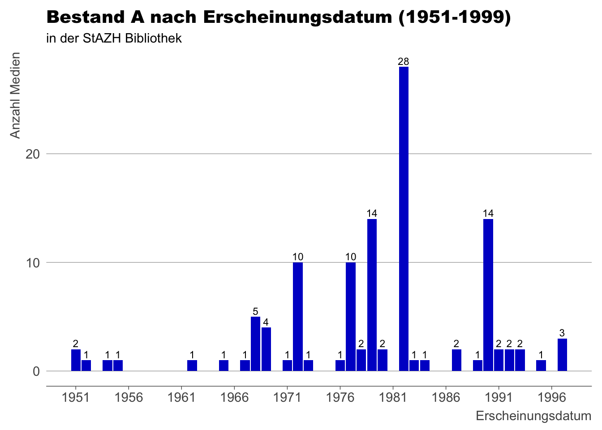
count(bib_gefiltert_1951_1999_A)# A tibble: 1 × 1
n
<int>
1 115B
bib_gefiltert_1951_1999_B <- filter(bib_bestand_besenrein, between(publication_date, 1951, 1999),grepl("^B", permanent_call_number) | grepl("B.*III|III.*B", permanent_call_number))
ggplot(bib_gefiltert_1951_1999_B, mapping=aes(x=publication_date))+
geom_bar()+labs(title="Bestand B nach Erscheinungsdatum (1951-1999)",
subtitle="in der StAZH Bibliothek")+theme_stat()+labs(x = "Erscheinungsdatum", y = "Anzahl Medien")+geom_bar(fill = "blue3")+
scale_x_continuous(breaks = seq(1951, 1999, by = 5))+geom_text(stat='count', aes(label=after_stat(count)), vjust=-0.3, size=3)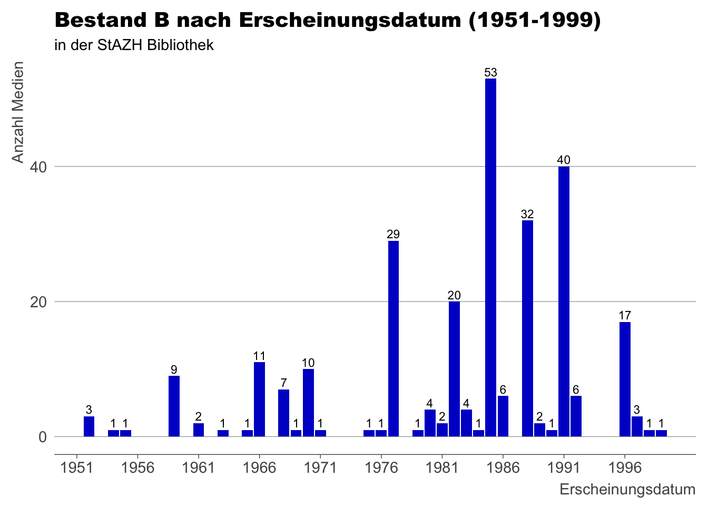
count(bib_gefiltert_1951_1999_B)# A tibble: 1 × 1
n
<int>
1 273C
bib_gefiltert_1951_1999_C <- filter(bib_bestand_besenrein, between(publication_date, 1951, 1999),grepl("^C", permanent_call_number) | grepl("C.*III|III.*C", permanent_call_number))
ggplot(bib_gefiltert_1951_1999_C, mapping=aes(x=publication_date))+
geom_bar()+labs(title="Bestand C nach Erscheinungsdatum (1951-1999)",
subtitle="in der StAZH Bibliothek")+theme_stat()+labs(x = "Erscheinungsdatum", y = "Anzahl Medien")+geom_bar(fill = "blue3")+
scale_x_continuous(breaks = seq(1951, 1999, by = 5))+geom_text(stat='count', aes(label=after_stat(count)), vjust=-0.3, size=3)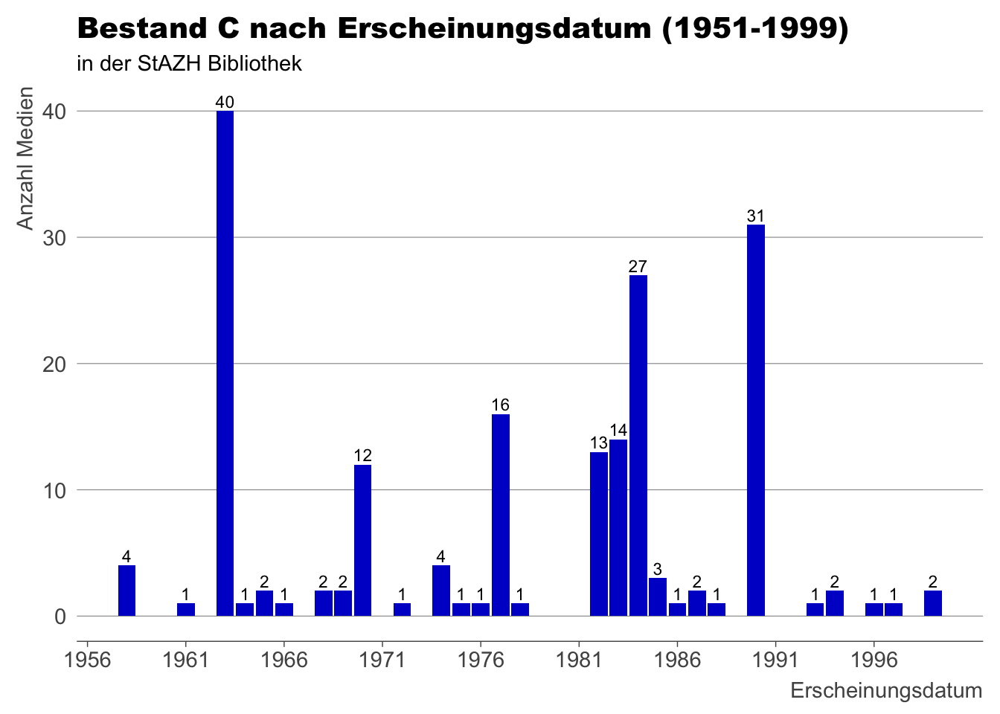
count(bib_gefiltert_1951_1999_C)# A tibble: 1 × 1
n
<int>
1 188D
bib_gefiltert_1951_1999_D <- filter(bib_bestand_besenrein, between(publication_date, 1951, 1999),grepl("^D", permanent_call_number) | grepl("D.*III|III.*D", permanent_call_number))
ggplot(bib_gefiltert_1951_1999_D, mapping=aes(x=publication_date))+
geom_bar()+labs(title="Bestand D nach Erscheinungsdatum (1951-1999)",
subtitle="in der StAZH Bibliothek")+theme_stat()+labs(x = "Erscheinungsdatum", y = "Anzahl Medien")+geom_bar(fill = "blue3")+
scale_x_continuous(breaks = seq(1951, 1999, by = 5))+geom_text(stat='count', aes(label=after_stat(count)), vjust=-0.3, size=2.5)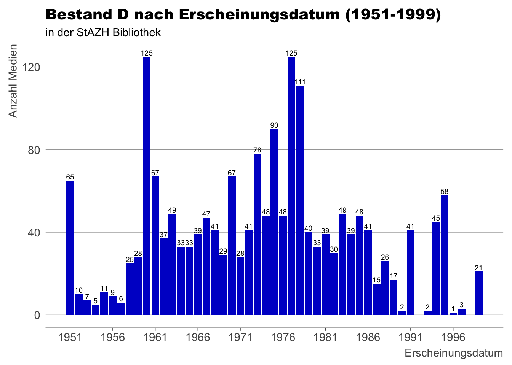
count(bib_gefiltert_1951_1999_D)# A tibble: 1 × 1
n
<int>
1 1852E
bib_gefiltert_1951_1999_E <- filter(bib_bestand_besenrein, between(publication_date, 1951, 1999),grepl("^E", permanent_call_number) | grepl("E.*III|III.*E", permanent_call_number))
ggplot(bib_gefiltert_1951_1999_E, mapping=aes(x=publication_date))+
geom_bar()+labs(title="Bestand E nach Erscheinungsdatum (1951-1999)",
subtitle="in der StAZH Bibliothek")+theme_stat()+labs(x = "Erscheinungsdatum", y = "Anzahl Medien")+geom_bar(fill = "blue3")+
scale_x_continuous(breaks = seq(1951, 1999, by = 5))+geom_text(stat='count', aes(label=after_stat(count)), vjust=-0.3, size=2.5)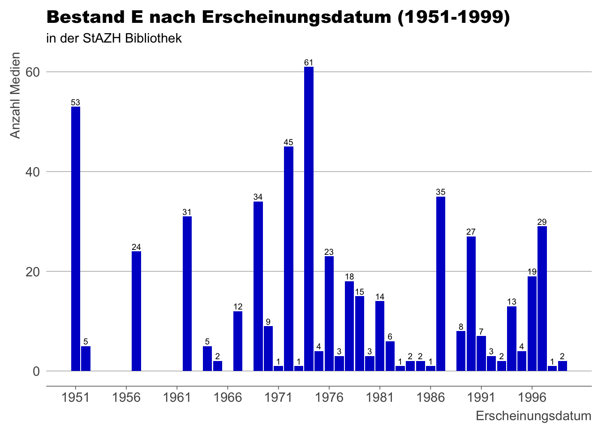
count(bib_gefiltert_1951_1999_E)# A tibble: 1 × 1
n
<int>
1 5252000 - 2025
A
bib_gefiltert_2000_2025_A <- filter(bib_bestand_besenrein, between(publication_date, 2000, 2025),grepl("^A", permanent_call_number) | grepl("A.*III|III.*A", permanent_call_number))
ggplot(bib_gefiltert_2000_2025_A, mapping=aes(x=publication_date))+
geom_bar()+labs(title="Bestand A nach Erscheinungsdatum (2000-2025)",
subtitle="in der StAZH Bibliothek")+theme_stat()+labs(x = "Erscheinungsdatum", y = "Anzahl Medien")+geom_bar(fill = "blue3")+
scale_x_continuous(breaks = seq(2000, 2025, by = 5))count(bib_gefiltert_2000_2025_A)# A tibble: 1 × 1
n
<int>
1 17B
bib_gefiltert_2000_2025_B <- filter(bib_bestand_besenrein, between(publication_date, 2000, 2025),grepl("^B", permanent_call_number) | grepl("B.*III|III.*B", permanent_call_number))
ggplot(bib_gefiltert_2000_2025_B, mapping=aes(x=publication_date))+
geom_bar()+labs(title="Bestand B nach Erscheinungsdatum (2000-2025)",
subtitle="in der StAZH Bibliothek")+theme_stat()+labs(x = "Erscheinungsdatum", y = "Anzahl Medien")+geom_bar(fill = "blue3")+
scale_x_continuous(breaks = seq(2000, 2025, by = 5))+geom_text(stat='count', aes(label=after_stat(count)), vjust=-0.3, size=3)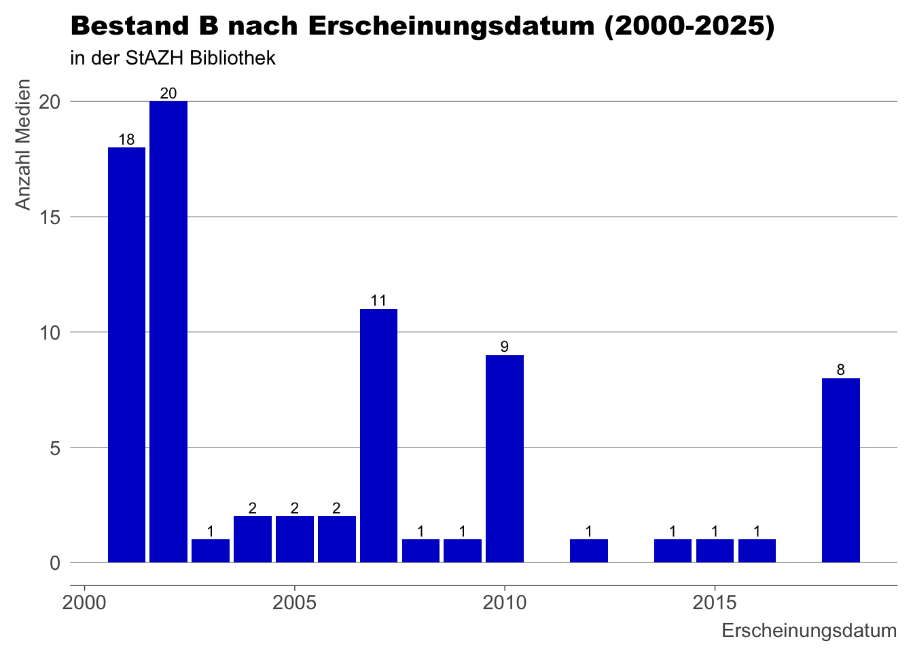
count(bib_gefiltert_2000_2025_B)# A tibble: 1 × 1
n
<int>
1 79C
bib_gefiltert_2000_2025_C <- filter(bib_bestand_besenrein, between(publication_date, 2000, 2025),grepl("^C", permanent_call_number) | grepl("C.*III|III.*C", permanent_call_number))
ggplot(bib_gefiltert_2000_2025_C, mapping=aes(x=publication_date))+
geom_bar()+labs(title="Bestand C nach Erscheinungsdatum (2000-2025)",
subtitle="in der StAZH Bibliothek")+theme_stat()+labs(x = "Erscheinungsdatum", y = "Anzahl Medien")+geom_bar(fill = "blue3")+
scale_x_continuous(breaks = seq(2000, 2025, by = 5))count(bib_gefiltert_2000_2025_C)# A tibble: 1 × 1
n
<int>
1 15D
bib_gefiltert_2000_2025_D <- filter(bib_bestand_besenrein, between(publication_date, 2000, 2025),grepl("^D", permanent_call_number) | grepl("D.*III|III.*D", permanent_call_number))
ggplot(bib_gefiltert_2000_2025_D, mapping=aes(x=publication_date))+
geom_bar()+labs(title="Bestand D nach Erscheinungsdatum (2000-2025)",
subtitle="in der StAZH Bibliothek")+theme_stat()+labs(x = "Erscheinungsdatum", y = "Anzahl Medien")+geom_bar(fill = "blue3")+
scale_x_continuous(breaks = seq(2000, 2025, by = 5))+geom_text(stat='count', aes(label=after_stat(count)), vjust=-0.3, size=3)count(bib_gefiltert_2000_2025_D)# A tibble: 1 × 1
n
<int>
1 141E
bib_gefiltert_2000_2025_E <- filter(bib_bestand_besenrein, between(publication_date, 2000, 2025),grepl("^E", permanent_call_number) | grepl("E.*III|III.*E", permanent_call_number))
ggplot(bib_gefiltert_2000_2025_E, mapping=aes(x=publication_date))+
geom_bar()+labs(title="Bestand E nach Erscheinungsdatum (2000-2025)",
subtitle="in der StAZH Bibliothek")+theme_stat()+labs(x = "Erscheinungsdatum", y = "Anzahl Medien")+geom_bar(fill = "blue3")+
scale_x_continuous(breaks = seq(2000, 2025, by = 5))+geom_text(stat='count', aes(label=after_stat(count)), vjust=-0.3, size=3)count(bib_gefiltert_2000_2025_E)# A tibble: 1 × 1
n
<int>
1 51write_csv(x = bib_bestand_besenrein,
here::here("daten/processed/processed_project.csv"))Schlussfolgerungen
Die Ergebnisse zeigen, dass sich der Bestand der Bibliothek des Staatsarchives über knapp 400 Jahre erstreckt. Das älteste Medium ist dabei von 1645 und stammt aus dem Bestand D, Zürcher Geschichte. Am jüngsten ist der Bestand B, Schweizer Geschichte, mit einem Eintrag aus dem Jahr 1787. Die ersten Einträge der übrigen Bestände sind:
A, Geschichte des Auslands: 1652
C, Geschichte der Kantone: 1785
E, Hilfswissenschaften: 1769
Auch wenn Bestand B und C hier recht jung wirken, so sind sie dennoch auf Platz 2 und 3 der Bestände mit den durchschnittlich ältesten Publikationen.
Der Bestand mit den meisten Einträgen ist Bestand D, Zürcher Geschichte und der mit den wenigsten A, Geschichte des Auslands.
Mithilfe von Grafiken, welche immer und je Bestand eine 50-Jahre-Sequenz abbilden, sind diese Daten noch einmal veranschaulicht.
Des Weiteren kann mithilfe einer Funktion genau berechnet werden, wie viele Medien die Bibliothek aus einem bestimmten Jahr und einem bestimmten Bestand besitzt.
Komplikationen
Da es sich bei sehr vielen unserer Exemplare um Fortsetzungen handelt, spiegeln die Graphiken nur jeweils einen ungefähren Wert wider, auf den aber nicht verlässlich zugegriffen werden kann. Das Problem ist, dass in der Spalte “Publication Date” jeweils nur das Datum angegeben wird, wann eine Publikation tatsächlich das erste Mal erschienen ist - so sind also Fortsetzungen alle unter einem Jahr aufgelistet und nicht zum Beispiel kontinuierlich etwa einmal pro Jahr. Sozusagen wird die Periodizität nicht beachtet und selbst wenn ein Medium 50 Ausgaben über 50 Jahre hat, so zählen wir hier 50x das erste Datum. Des Weiteren enthält das Feld “Publication Date” sehr oft einen leeren Wert (NA). Daher wurden schlussendlich aus eigentlichen 140’000 Einträgen nur 8’000.
So sind leider alle Angaben in diesem Bericht ohne Gewähr.
Lösung
Das Problem mit den Fortsetzungen liesse sich recht simpel lösen, in dem man entweder alle rausfiltert, oder die Spalte “description” miteinbezieht, denn hier ist jeweils das eigentliche Erscheinungsdatum der einzelnen Reihen- oder Zeitschriftenexemplare vermerkt. Die NA-Einträge hingegen, konnte ich mir bisher leider nicht erklären. Sie entstehen beim Importieren der Datei auf meine Arbeitsumgebung in R.
Edit: Das Problem entstand durch eine fehlerhafte Zeilentrennung in der Excel-Liste. Diese wurde vom Anbieter SLSP auf Anfrage bereinigt. Dieses Projekt jedoch, arbeitet momentan mit den alten Daten, da es aus zeitlichen Gründen nicht für eine Anpassung reichte.
Vielen Dank fürs Lesen
Leon